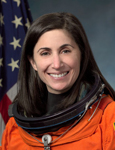

Lyndon B. Johnson Space Center
Houston, Texas 77058
|
National Aeronautics and Space Administration Lyndon B. Johnson Space Center Houston, Texas 77058 |
 |
Biographical Data |
||
Nicole Passonno Stott
NASA Astronaut
PERSONAL DATA: Born in Albany, New York. Her hometown is Clearwater, Florida. Nicole is married with one child. She enjoys flying, snow skiing, SCUBA diving, woodworking, painting, and gardening.
EDUCATION: Graduated from Clearwater High School, Clearwater, Florida, 1980.
Bachelor of Science in Aeronautical Engineering from Embry-Riddle Aeronautical University, 1987. Master of Science in Engineering Management, University of Central Florida, 1992.
SPECIAL HONORS: NASA Space Flight Medals; NASA Distinguished Service Medals; NASA Exceptional Achievement Medal; NASA Certificates of Commendation; NASA Performance Awards; NASA On-the-Spot Awards; 2012 Florida Aviation Hall of Fame Inductee; 2011 Russian Medal of Merit for Space; 2011 University of Central Florida Professional Achievement Award; 2009 Embry Riddle Aeronautical University Alumni Eagle of Excellence Award; NASA Aircraft Operations Newt Myers Team Spirit Award; KSC Public Affairs Certificate of Appreciation for Service.
EXPERIENCE: Nicole began her career in 1987 as a structural design engineer with Pratt and Whitney Government Engines in West Palm Beach, Florida. She spent a year with the Advanced Engines Group performing structural analyses of advanced jet engine component designs.
Nicole is an instrument rated private pilot. She is a member of the Experimental Aircraft Association and the 99’s Florida Suncoast Chapter. She is also a founding member of both the Manna Energy Foundation and Fragile Oasis.
NASA EXPERIENCE: In 1988, Nicole joined NASA at the Kennedy Space Center (KSC), Florida, as an Operations Engineer in the Orbiter Processing Facility (OPF). During her time at KSC, she held a variety of positions within NASA Shuttle Processing, including Vehicle Operations Engineer; NASA Convoy Commander; Shuttle Flow Director for Endeavour; and Orbiter Project Engineer for Columbia. During her last two years at KSC, she was a member of the Space Station Hardware Integration Office and relocated to Huntington Beach, California, where she served as the NASA Project Lead for the ISS truss elements under construction at the Boeing Space Station facility. In 1998, she joined the Johnson Space Center (JSC) team in Houston, Texas, as a member of the NASA Aircraft Operations Division, where she served as a Flight Simulation Engineer (FSE) on the Shuttle Training Aircraft (STA).
Selected as a mission specialist by NASA in July 2000, Nicole reported for astronaut candidate training in August 2000. Following the completion of training, she was assigned technical duties in the Astronaut Office International Space Station Operations branch, where she performed crew evaluations of station payloads. She also worked as a support astronaut for the Expedition 10 crew and as a Capsule Communicator (CAPCOM). In April 2006 she was a crewmember on the ninth NASA Extreme Environment Mission Operations (NEEMO 9) mission, where she lived and worked with a six-person crew on the longest duration NEEMO mission to date – 18 days on the Aquarius undersea research habitat. The NEEMO 9 mission served as an analog for future lunar operations – the crew tested advanced space suit design concepts, robotic devices for surface-based exploration, construction and communication techniques, and advanced tele-medicine hardware and techniques. In preparation for a long-duration space flight, Nicole completed a Russian language immersion class in Moscow, Russia, and underwent International Space Station systems training at each of the international partner training sites in Russia, Japan, Germany, and Canada.
SPACE FLIGHT EXPERIENCE: Nicole completed her first long-duration space flight as a Flight Engineer on International Space Station Expeditions 20 and 21 (August 28 through November 29, 2009). She launched to the International Space Station on Space Shuttle Discovery with the crew of STS-128 on August 28, 2009. She performed one spacewalk along with her STS-128 crewmate John “Danny” Olivas, with a total duration of 6 hours and 39 minutes. During her tour of duty on the station, she participated in the first track and capture of the Japanese cargo vehicle HTV, conducted a wide variety of science and research activities, and performed maintenance of the space station systems. After logging 91 days in space, she returned on the Space Shuttle Atlantis with the crew of STS-129 on November 29, 2009. Stott was the last expedition crewmember to return to Earth on a space shuttle.
Nicole completed her second space flight as a Mission Specialist on STS-133 (February 24 - March 9, 2011), which was the 39th and final mission for Space Shuttle Discovery. During the 13-day flight, the Discovery crew delivered the Permanent Multipurpose Module (PMM) and the fourth Express Logistics Carrier (ELC), including a complement of critical spare parts and supplies to the International Space Station. Nicole worked with Astronaut Michael Barratt, flying the space station robotic arm for the installation of the ELC-4 and PMM, which completed the assembly of the U.S. portion of the station. She also served as the onboard EVA crewmember, directing the mission’s two space walks, which were performed by astronauts Alvin Drew and Stephen Bowen; and she served as Flight Engineer for entry. The mission was accomplished in 202 Earth orbits, traveling 5.3 million miles in 307 hours and 3 minutes.
After completion of the STS-133 mission, Nicole worked a one-year assignment at KSC as the Astronaut Office representative to the Commercial Crew Program. She currently works at JSC as the Astronaut Office Space Station Integration Branch Chief.
MARCH 2013